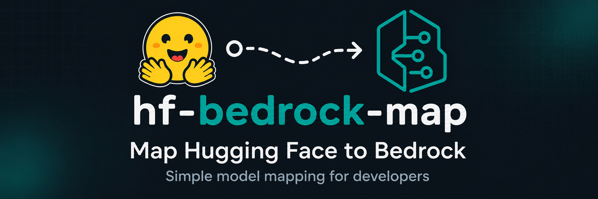

Match status
?:
| Hugging Face repo | Bedrock modelId | Provider | Match status | US regions | Evidence |
|---|
No matching entries.

Is a model you're self-hosting already served by Bedrock? Search by
Hugging Face repo (e.g. Qwen/Qwen3-32B) or Bedrock modelId.
US regions only (us-east-1/2, us-west-1/2), unioned · API for integrations · GitHub
| Hugging Face repo | Bedrock modelId | Provider | Match status | US regions | Evidence |
|---|